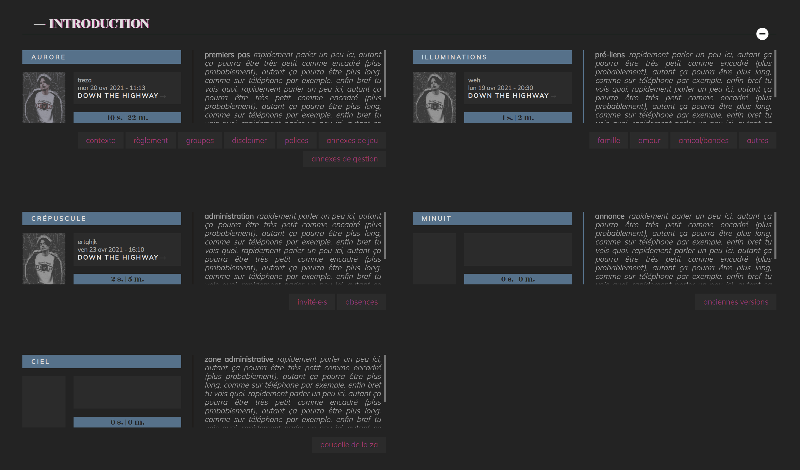
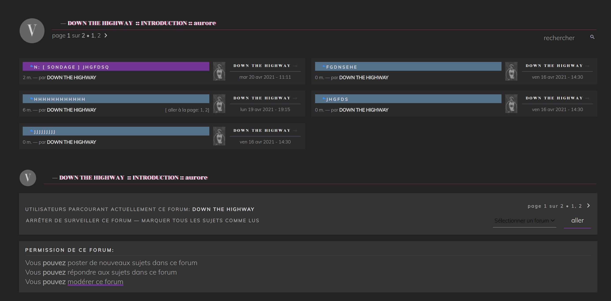
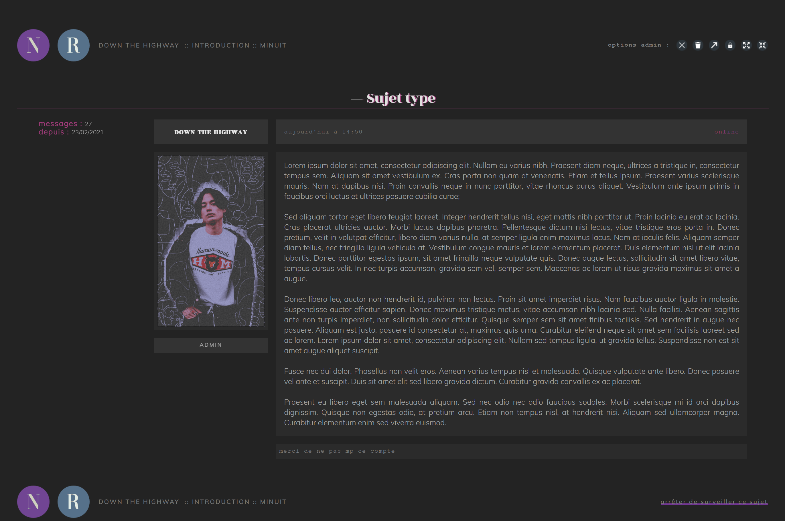
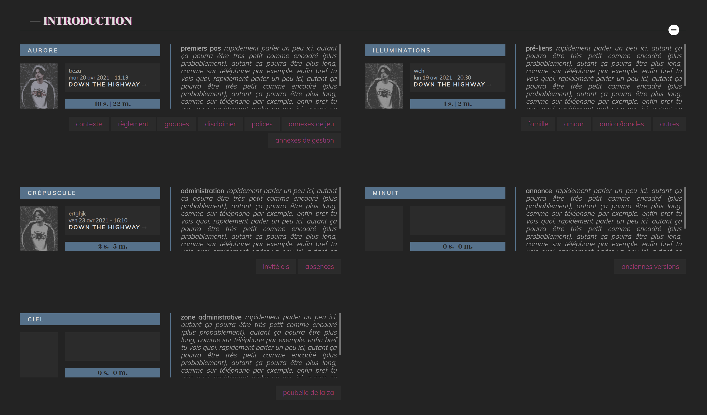
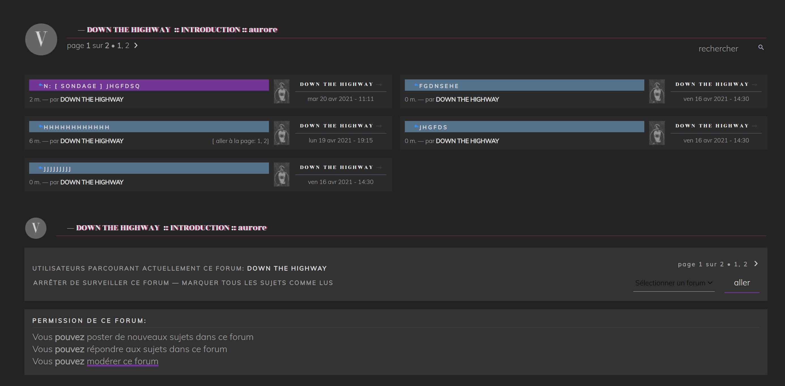
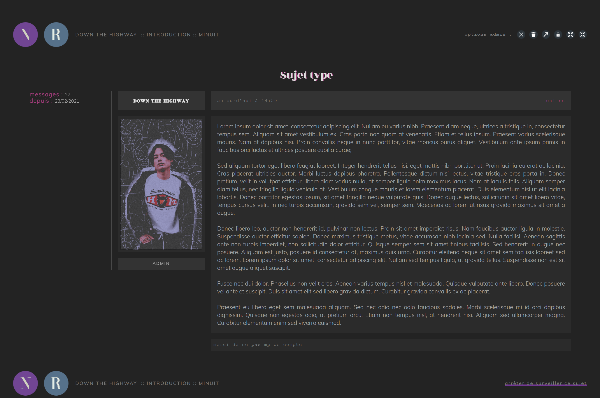
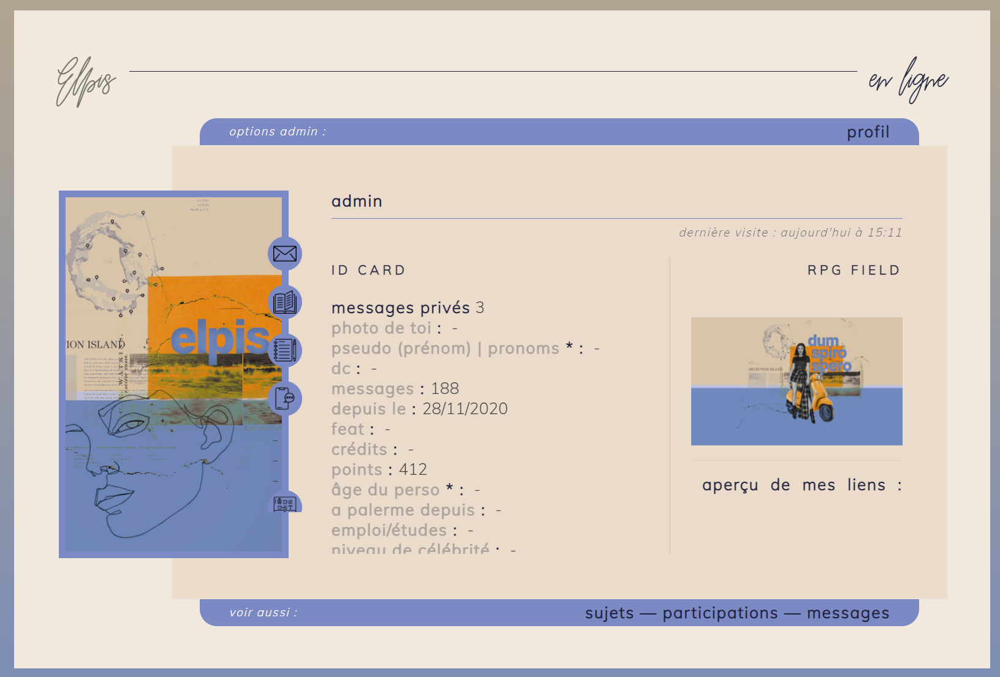
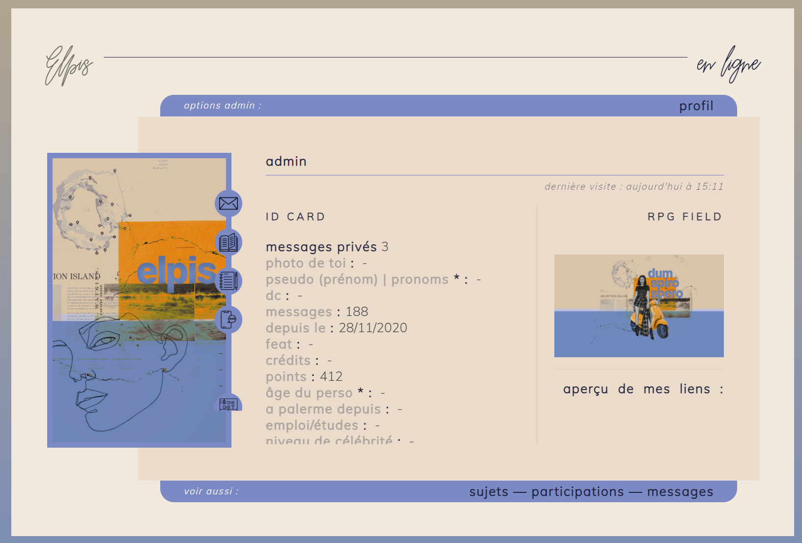

Portfolio graphique
forums interactifs
Les sites web présentés ci-dessous sont réalisés sur la plateforme
Au niveau technique, j'utilise donc une bonne partie des fonctionnalités par défaut de Forumactif, du HTML pour les templates, du CSS pour la mise en forme de l'ensemble, et du Javascript (en utilisant en grande partie la librairie de JQuery) pour créer mes propres modules.
GHOSTLY DAZE : libre service
Le forum est prévu pour que ses codes soient mis en libre service pour quiconque souhaiterait les utiliser. Un guide d'installation et d'adaptation est mis à disposition.DOWN THE HIGHWAY
Le forum a un thème qui se veut volontairement sombre. Il est en réalité la 2e version d'un ancien de mes forum exactement semblable (retrouvable ici) mais dont j'ai voulu actualiser les codes et perfectionner certains points et l'accessibilité. 





YELLOW ROADS
Le forum, si globalement réalisé, présente des codages incomplets et réalisés il y a plusieurs années. J'étais cependant satisfaite de l'idée derrière et de l'apparence générale.YELLOW ROADS
Le forum est un projet littéraire collaboratif qu'avec 2 amies à moi, nous avons porté à bout de bras pendant un an. J'ai réalisé les codages et le "thème" (l'affiche d'entête et l'harmonisation des images et couleurs du forum) de façon à ce qu'il reflète l'ambiance des contes écrits sur la plateforme.DUM SPIRO SPERO
Le forum est une commande que des créateur·rices m'ont passée début de l'année 2021. J'ai réalisé les codages en fonction de leurs souhaits et leurs besoins, en travaillant avec leur graphiste amateure qui a réalisé le thème. L'ensemble était supposé représenter l'Italie, le soleil, les petites légendes locales, l'éthéré. 
